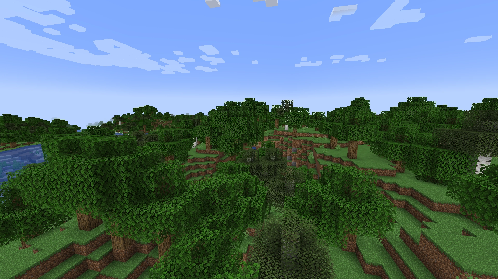

Minecraft biomy
Zpět
Lesní biomy
Lesní biomy jsou plné stromů a dalších rostlin
Žije zde většina obyčejných zvířat, jako krávy, ovce, prasata, vlci atd.
Lesní biomy můžeme rozdělit na:
- Les
- Květinový les
- Tajga
- Stará borovicová tajga
- Stará smrková tajga
- Zasněžená tajga
- Březový les
- Starý březový les
- Tmavý les
- Džungle
- Řídká džungle
- Bambusová džungle
